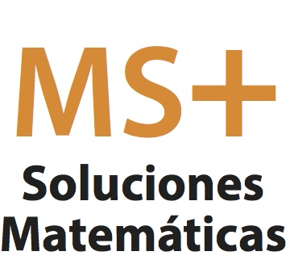

¿Quiénes somos?.
Somos un grupo de jóvenes y entusiastas usuarios de R en Ecuador enfocados en buscar mejores soluciones a nuestros problemas analíticos. Nos reunimos periódicamente para compartir conocimientos y experiencias del programa estadístico.
¿Dónde nos reunimos?
La primera tendrá lugar el día Lunes 12 de Octubre 2015, los interesados podrán seguir el evento mediante el siguiente link: https://hangouts.google.com/call/36iunpatyyohzvgibvkrrzbyzya.
http://www.meetup.com/es/Usuarios-de-R-Ecuador/
¿Quieres participar?
Si deseas mostrar algún aplicativo desarrollado en R que consideres puede ser útil a terceros, escribenos a Usuarios.R.Ec@gmail.com para agendar el evento en las próximas reuniones.
Auspiciantes
Contactos
- Diego Paúl Huaraca S.
diego.huaracas@epn.edu.ec - 0998890021